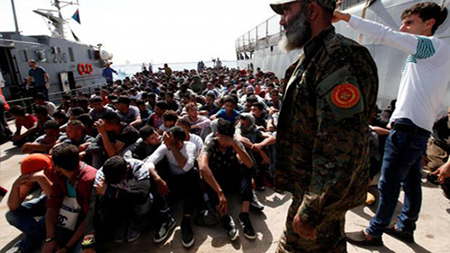

Notícias Nacionais de Malta
terça-feira, 16 de maio de 2017, 20 : 31
Malta e Tunísia devem se esforçar mais para combater a imigração, diz comissão parlamentar italiana
"Mais controles são necessários" sobre grupos de ajuda que resgatam imigrantes.
Uma comissão parlamentar italiana disse hoje que Malta e a Tunísia devem se esforçar mais para ajudar a Itália a lidar com o enorme número de imigrantes que estão usando a Líbia como um trampolim em busca de uma vida melhor na Europa.
A comissão também pediu mais controle sobre as organizações humanitárias que estão assumindo um papel cada vez mais significativo no resgate de imigrantes do Mediterrâneo.
O Comitê de Defesa do Senado lançou o inquérito no início deste ano, em meio a acusações de que organizações não-governamentais (ONGs) estavam em conluio com contrabandistas de pessoas para ajudar nas operações de busca e salvamento perto da costa da Líbia.
Em suas conclusões, os parlamentares disseram que nenhum grupo de ONGs estava sendo investigado, mas pediram que eles fossem submetidos a uma inspeção minusciosa, fazendo com que as tripulações dos navios e os financiadores sejam registrados junto às autoridades.
Eles também sugeriram que a polícia deveria viajar a bordo das embarcações de ONGs - algo que a maioria dos grupos humanitários rejeitaram.
"De forma alguma, seja sob a lei internacional ou local, é desejável que as organizações privadas criem corredores humanitários", disse o relatório parlamentar, sublinhando que apenas os órgãos estatais devem supervisionar a crise dos imigrantes.
Grupos de ajuda como Médicos sem Fronteiras negam ajudar os contrabandistas, dizendo que seu único objetivo é salvar as vidas de imigrantes que invariavelmente são amontoados em perigosos e instáveis botes de borracha ou em barcos de pesca de madeira que são impulsionados ao mar.
A Itália tem sido um destino para a imigração marítima há anos, com mais de meio milhão de pessoas chegando aqui desde 2014. Um recorde de 181.000 pessoas fizerão a viagem em 2016 e neste ano as viagens, até agora, aumentaram em 30 por cento.
A comissão disse em 2014 que menos de um por cento de todos os recém-chegados foram retirados do mar por barcos da ONG. Nos primeiros quatro meses deste ano, esse número saltou para 35%.
Quase todos os imigrantes são levados para a Itália e a comissão disse que nem Malta nem a Tunísia, que eram frequentemente os países mais próximos aos barcos lotados, levavam os refugiados.
"Precisamos acabar com esta situação que já não é sustentável e chegar a um acordo o mais rápido possível", disse a comissão, referindo-se tanto a Malta como à Tunísia.
O presidente da comissão, Nicola Latorre, disse que os imigrantes receberam telefones via satélite com o número de ONGs, uma vez que eles estavam no mar para tentar garantir seu resgate.
"Os telefones são lançados no mar se os salvamentos forem realizados por navios de guerra, mas se uma ONG levar a cabo o resgate, os telefones são retirados e usados em travessias subseqüentes", disse Latorre.